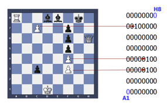

Folks, did you know that the Spanish start-up ecosystem is flourishing? Google is the latest big player to land on Spanish soil and become an active agent in this blooming sector. Well, almost of the key players will be at the Spain Startup South Summit. And we obviously want to be there.
C/C++ Madrid meetup @ biicode office
Today is the day! We host the C/C++ Madrid meetup
It’s finally here and full of interesting content. The C and C++ community gathers together to talk about metaprogramming.

On the shoulders of giants
How to upload to biicode. Example 1: JSON11 by Dropbox
A few days ago, we came across this fantastic library from the Dropbox team, to encode and decode JSON using C++11. Syntax is very clean and attractive which makes the library very easy to use.
Also, this library is an ideal example to show how to upload to biicode your library like I did.
Why would you want to upload to biicode your library ?
Once it’s uploaded to biicode, everyone (including yourself) can reuse it easily and without any complex configuration.
This is key: If you make a good job configuring and uploading the library to biicode, nobody will EVER do this job again. The library will work for anyone just by typing #include “lasote/json11/json11.hpp”.

JSON11 by DROPBOX
Why a FILE BASED dependency manager rocks for C/C++
We have a big problem. We have miserably failed to explain the core value proposition of biicode: a file-based dependency manager. We have tried to communicate it in the homepage, in features landing pages, videos, etc. While we certainly are growing, it is also true that not as fast as we would like.
There are many reasons that explain this: People understand that we are a dependency manager for C/C++, but also realize that we still don’t have premium accounts (for private code), in-house deployment or that we’re not open-source. This is all true, we are working in all these features, including going open-source regarding which we will soon announce something relevant. But we think these are not reasons (stoppers) enough to not engage with the platform now, try it, check how it works, give feedback to help define the tool to your needs.
We believe that the main problem is that we didn’t explain properly what makes biicode so special, and we failed because we have used the wrong channels. Here, I will explain it with the language we, developers, all love: source code.

Template Metaprogramming with Modern C++: templates in depth
Template Metaprogramming with Modern C++: Templates in depth
The last time we learnt what metaprogramming was, how metaprogramming in C++ via templates works, and the functional spirit of the embedded language that C++ template metaprogramming is.
In this post we will learn C++ templates in depth: Class and function templates, template parameters, variadic templates, all with in depth examples.
SPOILER: Finally, there is no SFINAE explanation on this post. This has a large amount of contents to be read and understood, I think understanding correctly the template system and the different categories of template parameters is good enough for a single (But large) blog post. Of course, if there is any problem feel free to post a comment here.

Sparse bitsets in C++ with BITSCAN
Sparse bitsets in C++
Sparsity when referring to systems indicates that they are loosely coupled. Thus, a sparse matrix is a matrix in which most of its elements are zero, a sparse graph has very few adjacent vertices (its adjacency matrix is also sparse) etc. Opposite to sparsity is density, and dense systems are those that are strongly coupled.
In a recent post we proposed BITSCAN a recent C++ library to manipulate bit strings. A comparative survey with other state of the art implementations (such as bitset (STL), or dynamic_biset(BOOST)) may be found here. This post brifely describes how BITSCAN operates with sparse bitsets.

Figure 1
Our Story (II): Miguel Hernando’s road to entrepreneurship
How did biicode begin?
…certainly not in a parking lot, but Pablo San Segundo and I were pretty close to the one at the University the very first time Diego explained biicode to us.
I consider myself lucky for being part of biicode’s birth. The day we decided its name, or those endless meetings with a chalkboard full of diagrams, the first “battle logo” as we named our first “company mascot”.
In addition, I really enjoy my work as a university professor and engineer. Thanks to the university I have had the opportunity to devote myself to something that fascinated me since I was a child: robotics. But you cannot master robotics without solid programming skills, so I’ve been programming since I started hacking the fascinating Commodore 64, with its “peek” and “poke”, and his incredible voice synthesizer accessible through a simple command: “say”.

Hacking the Commodore 64 was classy.
Rapid prototyping and teaching ZeroMQ in C++ with biicode.
ZMQ or ZeroMQ is one of the coolest open source libraries out there. It fills a real necessity in a new, brilliant way. It is very active, has bindings to many languages… that’s why it is so popular.

I was a professor in university, teaching C/C++, software engineering, distributed systems (plain old sockets, SOAP, web…), and I really enjoyed keeping my classes up to date and teaching last trends and technologies. If I was still a teacher, I would definitely teach some sessions using ZeroMQ.
Template Metaprogramming with Modern C++: Introduction
Template Metaprogramming with Modern C++: Introduction
Any sufficiently complex C++ code is indistinguishable from trolling
Arthur C. Clarke
Preface
Template metaprogramming is one of the things that makes C++ that complex, poor known, and sometimes horrible language. However, its power and expressiveness are some of the best features of C++.
Extensible and fully generic C++ libraries aren’t possible without template metapogramming. Even the Standard Library implementations hide many template metaprogramming tricks to make standard containers and algorithms that generic, high level, and efficient tools we use everyday.
The fact that tmp is a powerful tool can be seen in the evolution of the language, which now has features designed to improve metaprogramming, see C++11 <type_traits>, C++11 variadic templates, C++14 variable templates, C++14std::integer_sequence, etc.

Credit: https://gitorious.org/metatrace
Those are my ToS, and if you don’t like them…well I have others.
Facts
In my last post I stated that I am not afraid of technical challenges, but that I had made a mistake about the community challenge involved in launching a tool as biicode. I’ve been a C and C++ developer for years, I have released some projects as open source, collaborated in industrial projects and met many other developers, I’ve taught those languages thousands of hours and organized many activities as robotic contests programmed in such languages. So I thought that belonging to that community implied fully understanding such community. It was a big mistake.